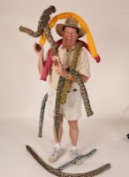
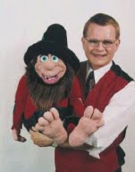

Branson Magic Bonanza Convention Review
5/4/2011
By Dale Brown
I was fortunate enough to recently attend the Branson Magic Bonanza Convention in Branson, MO. The event is organized and run by Marty and Brenda Hahne who have had a dealer's table at Vent Haven ConVENTion in the past.
Marty and Brenda do a fantastic job and they are to be commended on the quality and organization of their convention. Top magicians from around the globe presented lectures and appeared in the All Star Show. The performers included Dan Stapleton, Johnny Thompson, Denny Haney, Stoil and Ekaterina and others. Trust me, it was a world class group of magicians and I felt honored to meet them.
Of course the primary reason I was there was to see my good friends At Moessinger and Mark and Jody Wade.
Al Moessinger (photo right) is familiar to anyone who attends the International Ventriloquists' ConVENTion in Ft. Mitchell, KY, where he lectures and helps out in any way he can. At the Magic Bonanza, Al lectured on something he knows a lot about, "Kid Show Funny Business" or how to add "fun" to you act.
Anyone who has seen Al work knows that he takes enthusiasm to a whole new level ... and that's what he did during his lecture. Al demonstrated a wide variety of games and activities that magicians could add to their acts to incorporate more audience participation and generate more laughs. The audience participation games were fast-paced and entertaining. If you could keep up, you were laughing. Al knows a lot about the latest electronic gizmos that entertainers can use to enhance their acts. If you have a question about a new item, Al is the guy to contact.
Mark (photo below) did an outstanding presentation on "Adding Puppets to Your Show." Because the room was full of magicians (nearly 100 of them) Mark's lecture was basic....covering the advantages of adding puppets to a magicians' act, what kind of puppets to use, puppet manipulation, ventriloquism basics and much more. Using his Axtell turkey, Mark demonstrated how puppets can be used to both entertain and educate by performing parts of his school show that focuses on "Bullying."
Mark's puppet manipulation demonstration had audience members mimicking his moves to deftly show them how to convey a wide variety of emotions and movements using just a simple hand puppet. Even though it was the last lecture on the last day of the convention, Mark held convention attendees rapt attention and they enthusiastically bombarded him with questions and took part in his audience participation bits. It was easy to see why Mark is sought after as a convention lecturer at magic, clown and vent conventions.
Mark also appeared on the Convention's All Star Show at the Hamner Barber Theater. He amazed and entertained audience members with his famous baby cry routine and ventriloquial skills. And his duck puppet, Rodney, provided loads of laughs.
All in all the Branson Magic Bonanza was a terrific event and I hope I'm able to attend again next year.
* * * * *
Note from Mr. D: My thanks to Dale Brown for writing this review for my blog. Dale does not have a blog of his own, but his vent figure, "Chip", does! I recommend you check it out for the purposes of both entertainment and business: Chip Martin
I was fortunate enough to recently attend the Branson Magic Bonanza Convention in Branson, MO. The event is organized and run by Marty and Brenda Hahne who have had a dealer's table at Vent Haven ConVENTion in the past.
Marty and Brenda do a fantastic job and they are to be commended on the quality and organization of their convention. Top magicians from around the globe presented lectures and appeared in the All Star Show. The performers included Dan Stapleton, Johnny Thompson, Denny Haney, Stoil and Ekaterina and others. Trust me, it was a world class group of magicians and I felt honored to meet them.
{kind=link}

Of course the primary reason I was there was to see my good friends At Moessinger and Mark and Jody Wade.
Al Moessinger (photo right) is familiar to anyone who attends the International Ventriloquists' ConVENTion in Ft. Mitchell, KY, where he lectures and helps out in any way he can. At the Magic Bonanza, Al lectured on something he knows a lot about, "Kid Show Funny Business" or how to add "fun" to you act.
Anyone who has seen Al work knows that he takes enthusiasm to a whole new level ... and that's what he did during his lecture. Al demonstrated a wide variety of games and activities that magicians could add to their acts to incorporate more audience participation and generate more laughs. The audience participation games were fast-paced and entertaining. If you could keep up, you were laughing. Al knows a lot about the latest electronic gizmos that entertainers can use to enhance their acts. If you have a question about a new item, Al is the guy to contact.
Mark (photo below) did an outstanding presentation on "Adding Puppets to Your Show." Because the room was full of magicians (nearly 100 of them) Mark's lecture was basic....covering the advantages of adding puppets to a magicians' act, what kind of puppets to use, puppet manipulation, ventriloquism basics and much more. Using his Axtell turkey, Mark demonstrated how puppets can be used to both entertain and educate by performing parts of his school show that focuses on "Bullying."
{kind=link}

Mark's puppet manipulation demonstration had audience members mimicking his moves to deftly show them how to convey a wide variety of emotions and movements using just a simple hand puppet. Even though it was the last lecture on the last day of the convention, Mark held convention attendees rapt attention and they enthusiastically bombarded him with questions and took part in his audience participation bits. It was easy to see why Mark is sought after as a convention lecturer at magic, clown and vent conventions.
Mark also appeared on the Convention's All Star Show at the Hamner Barber Theater. He amazed and entertained audience members with his famous baby cry routine and ventriloquial skills. And his duck puppet, Rodney, provided loads of laughs.
All in all the Branson Magic Bonanza was a terrific event and I hope I'm able to attend again next year.
* * * * *
Note from Mr. D: My thanks to Dale Brown for writing this review for my blog. Dale does not have a blog of his own, but his vent figure, "Chip", does! I recommend you check it out for the purposes of both entertainment and business: Chip Martin